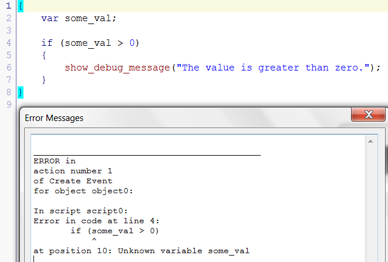
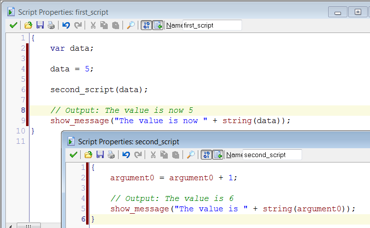
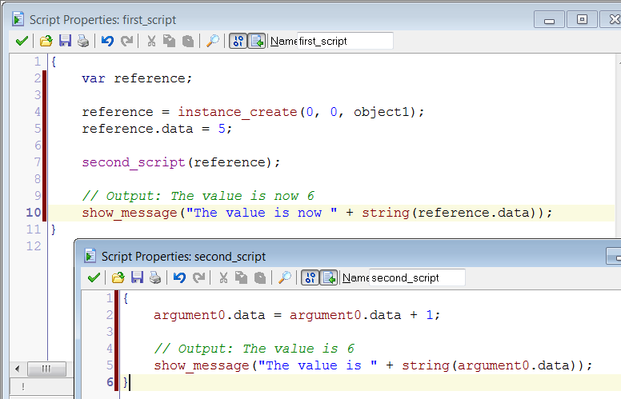

Read Chapter 10 of Code Complete. The following commentary will guide you in applying these concepts.
A variable declaration is a programming statement that creates a new variable. You can think of it as an introduction or an announcement that the variable exists. The details of variable declarations are quite different for different PLs.
In GML scripts, you learned to declare (local) variables like this:
var min_value;This tells the programming environment to reserve memory space to store some data, and that you will use the name min_value to refer to the data.
Some PLs do not require variable declarations. Instead, they support “implicit” (automatic) creation of variables. GML supports implicit declarations, but in a particular way. If you do not declare a variable before you use it, then it will be automatically created as an instance (not local) variable. (“Instance” and “local” describe a variable’s scope, which we will get to shortly in section 10.4.)
As much as possible, avoid relying on implicit declarations. Your reading includes an example of one reason for this. Suppose that you rely on implicit declarations, and are using a variable named account_number. If you write a statement that mistakenly gives the name as account_num, you have just introduced a significant error into your code. By mistyping the variable name, you have created a second, separate variable without realizing it.
This is prevented if your toolset requires you to declare a variable before using it. You would declare and use the “correct” name account_number without any difficulty. But the mistaken statement that uses the name account_num would generate an error because you are trying to use a variable that has not been declared.
Some programming toolsets will allow you to turn off support for implicit declarations. As the book suggests, turn this off if you can. In GML, we have no way of disabling the implicit declaration. But you can avoid relying on it by creating and initializing all instance variables at the time the instance is created.
You need to figure out how to apply these ideas and guidelines to the PL you have chosen to study. Your PL may be a statically typed language, which means that the declaration must say what type of data the variable will store (number, string, etc.) This concept does not exist in GML or other dynamically typed PLs, where a variable can store any type of data. We will learn more about static and dynamic typing later.
Initializing a variable means giving it its first (initial) value. This is sometimes called “defining” the variable. Initialization is important, because problems arise when you attempt to use the value of a variable that has not been initialized.
Some programming toolsets will generate an error in situations like this. By default, GML does (although the description is kind of misleading).

The variable some_val has been declared, but not initialized. It has no defined value and as a result, line 4 cannot be executed.
Some toolsets eliminate this problem by defining rules about default data values. (For example, you can configure GameMaker’s to treat all uninitialized variables as 0.) Best practice, though, is to explicitly initialize variables instead of relying on rules that might change or be misunderstood.
Your reading explains the concept of variable scope pretty clearly. Each PL will have a set of “scope levels”. For GML, they are: local, instance, and global. A local variable is only visible in the script where it is declared. An instance variable is contained inside an object instance, and is visible anywhere that the instance can be accessed. A global variable is visible everywhere.
You can skim the subsections on pages 245-248 at a high level. But pay close attention to the guidelines and comments on minimizing scope.
Usually, persistence refers to techniques for saving program information in nonvolatile storage so that it can persist from one run of the program to another, even if the system loses power.
McConnell uses the term in a much broader sense that includes the typical meaning, plus much more. Part of this larger meaning involves a distinction between two approaches to managing memory: static allocation and dynamic allocation. In some ways, this is closely related to the concept of variable scope. There is a subtle difference though: scope refers to the visibility/existence of a name (a variable), while persistence refers to the existence of the underlying data. If there is only one variable referring to a given memory address, then there is no distinction. However, the distinction is important if there is more than one variable that refers to the same physical memory address (a situation known as aliasing).
In GML (and most other PLs), the memory storage used by local and global variables is statically allocated from an area of memory called the stack.
As you may recall from the “How Hardware Works” course, most instruction set architectures include the ability to PUSH and POP data to/from a system stack in a “first-in, last-out” fashion. One of the primary uses of this mechanism is to save information about the current state of a subroutine (including its local variables) before executing a call to a different subroutine. A return to the calling subroutine is implemented by popping the system stack to reinstate the situation prior to the call.
Modern operating systems provide similar stack-based handling of subroutine calls for higher-level PLs. It is common for an OS to provide a separate stack for each running program.
When a variable goes “out of scope”, that variable can no longer be used to access the data that it represented. A local variable goes out of scope when the script that contains it ends. A global variable goes out of scope when the global program (game) ends. When the variables go out of scope, the memory space that was reserved by their declaration is automatically released for other use as the stack is popped. The data is lost, although another copy of the value(s) might exist elsewhere.
GML allows dynamic allocation of memory through the instance_create function, which returns an ID number for a newly created instance of a particular type of object. Other PLs may use the terms reference, pointer, handle, address, or descriptor to refer to this sort of an ID. (“Reference” is the preferred language-neutral term; the ID or address is not data in the direct primitive sense, but an indirect reference that allows access to the data.) Each PL will have dynamic allocation function(s) that allocate memory when they are called. This memory is pulled from the heap or “free store”, an area of memory distinct from the stack.
GML local and global variables that store a reference (instance ID) are no different from those that hold primitive data such as the game’s score. When the variable goes out of scope, access to the data is lost, unless another copy exists elsewhere. But the indirect nature of a reference means that the “copy” is not a distinct clone of the data value; it is a copy of the reference, which allows us to access the one and only underlying instance.
To illustrate, consider the following GML scripts, using local variables and statically allocated data. The first script declares then initializes the local variable data, then passes its value as an argument to the second script. The second script takes the value of its argument (argument0 behaves as a local variable), adds 1, and displays the result, which is 6. The return to the first (calling) script destroys the local symbol argument0. Back in the first script, a copy of the lost value is available as the local variable data, but this separate copy was made before the addition of 1. So the final output prints the unaltered copy of the value: 5.

Now, contrast this with a parallel example where dynamic memory allocation is used instead of static allocation. Both outputs display a value of 6. Although the argument0 that is local to the second script is destroyed as before, what is retained in the local variable of the calling script is not a copy of the underlying data; it is a copy of the reference that allows access to the one and only underlying instance, with its instance variable that contains the altered value 6.

We must now consider how dynamically allocated memory can be released for other use. Statically allocated stack space is automatically released when a routine call terminates. But when can we safely conclude that dynamically allocated space is no longer needed? There are two approaches.
In the first approach, the PL implementation handles it automatically. Perhaps the system counts the number of existing references to a particular area of memory. (In the example above, there was one reference just after the call to instance_create, a second one during the call to the second script, then back to one after second_script returned, and finally none when the first script ended.) As long as one or more references to an area of memory exists, the programmer may access it. When the reference count goes to zero, the system can safely mark the memory available for some other use. Reference counting is one strategy to implement garbage collection: the automatic recovery of dynamic allocations no longer in use.
In the second approach, it is up to the programmer to explicitly request that dynamically allocated memory be released, by calling a function that is the “flip side” of the dynamic allocation function. For example, GML has an instance_destroy function that destroys a specified instance, making its memory space available for some other use.
There are, of course, tradeoffs to these two approaches. Garbage collection is easier for the programmer, and prevents certain common mistakes. However, it tends to reduce performance because the system must do the overhead work of reference counting or some other bookkeeping strategy. Some strategies only attempt to recover unused memory when the system is running low. This tends to improve performance, but also makes it less consistent and predictable. (The same program running the same operations on the same data may perform differently depending upon how much memory is free.) Guaranteed worst case performance is vital for safety critical systems, so garbage collection is not a good choice in some situations.
The manual approach gives the programmer complete control, and the ability to guarantee consistent optimal performance. However, it leaves programmers free to introduce certain problems. One of these occurs when a programmer releases some dynamically allocated memory, but continues to use the values stored there. This can cause a failure, but only on occasions where the potential problem leads to conflicting use of the same space. The problem can be intermittent, inconsistent in its behavior, and hard to find.
The second problem is called a memory leak: the programmer has allowed all references to some dynamically allocated memory to go out of scope. There is no way for the programmer to refer to this memory, not even for the purposes of requesting that it be released. This may not impact a short running program. However, imagine a long running program like a Web server, where a small memory leak (maybe just a few bytes) occurs on each incoming Web request. The server may run fine for a long time, until one day the accumulated memory lost to the leak causes a failure due to insufficient resources. This, too is a difficult problem to identify and locate.
For a cutesy explanation of dynamic memory allocation, see Malloc, Free, and the Mall of New Athens at the Computational Fairy Tales blog.